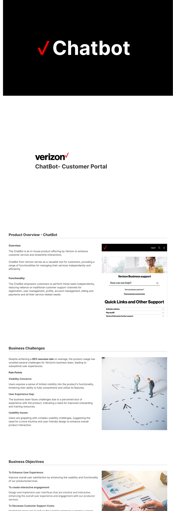
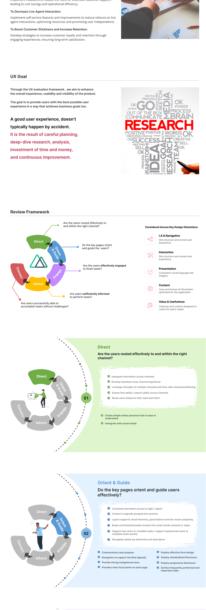
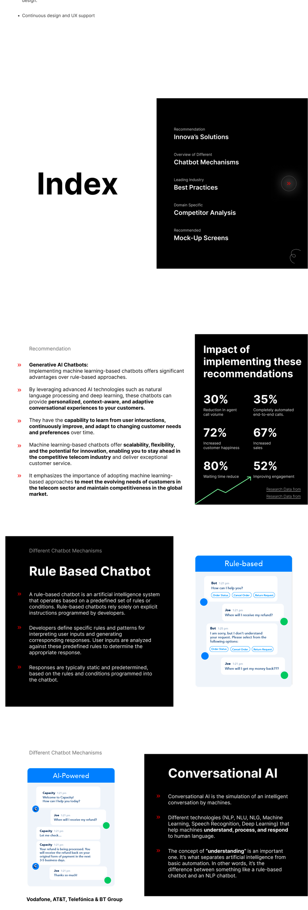
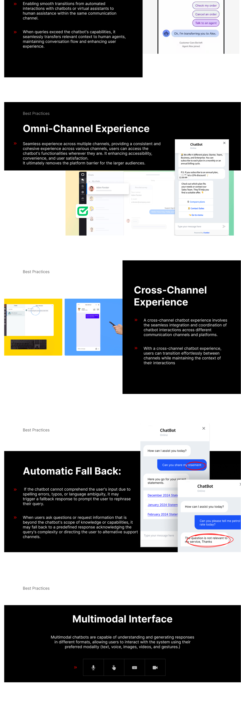
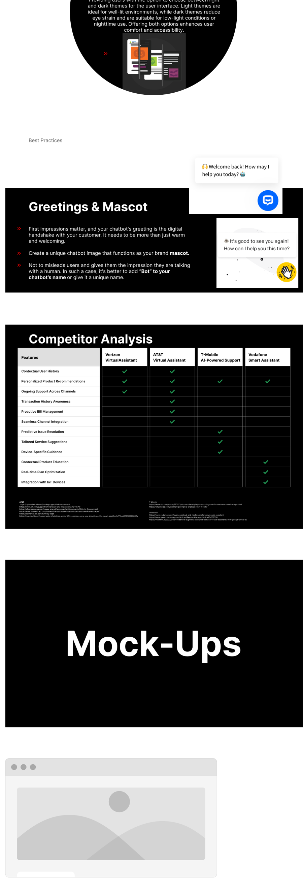
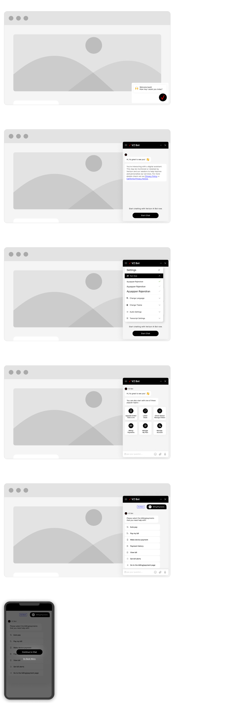
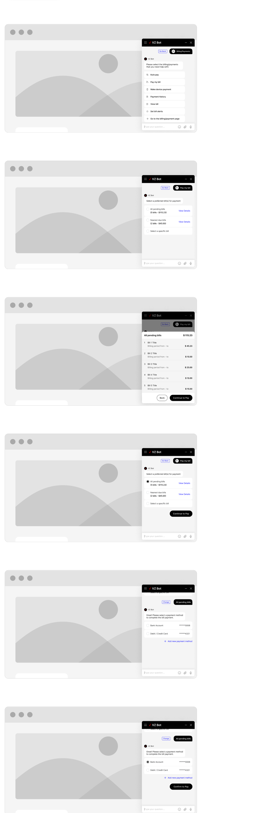
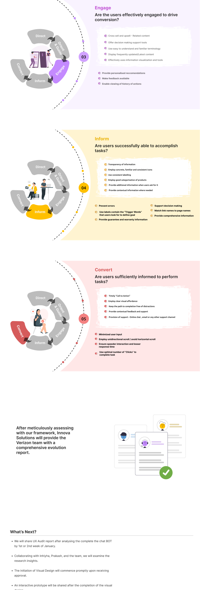

A 65% success rate looked fine on a dashboard. The full trace of the audit that showed why the business team still didn't trust it — and where the process genuinely stopped.

Innova Solutions was engaged to evaluate Verizon's existing Business Support chatbot and hand back a structured case for what to fix and why. This isn't a redesign-and-ship story — it's an audit story, and I'd rather show it as exactly that than dress it up as something it wasn't.
The chatbot handles registration, account management, billing, and payments for business customers, independent of a live agent.
A 65% average success rate — technically healthy, still generating business-team complaints.
Improve usability and engagement, reduce reliance on live agents, increase the customer stickiness good self-service earns.
UX audit lead — framework design, evaluation, competitive research, and recommendation mockups.
65% success is a number a dashboard is happy with and a business team still complains about. I treated that gap itself as the research question, rather than assuming the chatbot was simply "fine" because the topline number looked acceptable.
This audit's research base was internal business-team input and direct product evaluation, not moderated interviews with external Verizon business customers. No customer-facing interview transcripts or survey data were part of this engagement's scope.
Pattern → Insight: all three complaints point at the same root — the chatbot was evaluated on task completion, never on comprehension or confidence.
This reflects the internal business team's perspective, documented in the engagement. No direct empathy mapping of Verizon's external business customers was conducted in this phase.
No individual customer persona was built. The audit evaluated the product against a defined user group — Verizon business customers using self-service — rather than a named individual, which is consistent with an audit's scope versus a full product redesign.
A journey map wasn't part of this audit's deliverables. The bill-pay flow in Stage 04 documents the one task sequence that was mapped in detail.
"A good user experience doesn't typically happen by accident. It's the result of careful planning, deep-dive research, analysis, investment of time and money, and continuous improvement."
No structured evaluation existed → need a lens broader than task completion → opportunity: a named, criteria-based framework → solution: Direct, Orient & Guide, Engage, Inform, Connect.

Before proposing what Verizon's chatbot should become, I mapped what a chatbot even is across the spectrum — rule-based versus conversational AI. A rule-based chatbot operates on predefined rules with static responses; conversational AI simulates genuine understanding via NLP, NLU, NLG, and deep learning. That distinction set the ceiling on what "Inform" and "Connect" could realistically achieve without a platform-level change, not just a UI one.

Industry best practices were brought in as design principles, not decoration: omni-channel and cross-channel continuity, automatic fallback so a misunderstood query never dead-ends, a multimodal interface, and a deliberate greeting/mascot design.

No formal impact/effort matrix was produced for this audit. In its place, the competitive teardown below functioned as the de facto prioritization — capabilities every competitor had that Verizon's bot didn't.
Verizon's own VirtualAssistant was benchmarked directly against AT&T, T-Mobile, and Vodafone across eleven concrete capabilities — from contextual user history to predictive issue resolution to IoT device integration — sourced and cited rather than asserted from memory.

The entry point leads with a popular-topics grid — upgrade order, latest deals, check status, billing and payments, manage plan, manage account — instead of an empty text box asking the user to guess what the bot can help with. A visible settings panel and an upfront, honest disclosure that the user is talking to a digital assistant address the "Direct" and "Inform" gaps directly.

Billing and payments — one of the highest-stakes tasks — got mapped as a full conversational flow: select a bill from pending or overdue, see it broken out with amounts, choose a saved payment method or add a new one, and confirm. Every step keeps the user informed of exactly where they are, which is precisely what "Connect" was measuring for.

These mockups are the audit's recommendation artifacts — there wasn't a separate low-to-high fidelity exploration phase, since visual design hadn't formally started at the point this engagement concluded.
No moderated usability session with recruited participants was run. The "test" here was applying the Direct/Orient & Guide/Engage/Inform/Connect framework to the current chatbot directly — a structured expert evaluation, not a user test. I'm naming that distinction rather than letting the word "test" imply something it wasn't.
Scored against the framework, the 65% success rate stopped looking like a passing grade. It looked like a product that could technically resolve two out of three interactions while still leaving users unsure what it could do, unclear on next steps, and unable to self-serve with confidence — exactly the gap the business team had been describing anecdotally, now backed by a structured evaluation instead of a feeling.

No iteration cycle happened within this engagement. The next steps were explicit and sequential, not assumed: finalize and hand off the audit report, review findings with the wider team, begin visual design only once approved, then share an interactive prototype after that. The mockups in Stage 04 are the input to that next phase, not a finished, iterated product.
| Metric | Result |
|---|---|
| Baseline success rate (existing product) | 65% |
| Competitor capability gaps identified | Sourced, cited comparison across 11 capabilities |
| Post-redesign success rate / CSAT | Not applicable — redesign not yet built or tested |
I don't have a post-launch number to report here, and I'd rather say that plainly than invent one. What I can stand behind is the framework and the findings — they're what the next phase of design actually got built on.
The through-line: the most useful thing I delivered wasn't a mockup. It was a framework Verizon's team could reuse on the next feature, long after this specific audit was filed away.
Verizon ChatBot UX Audit — a Case Study by Ayyappan Rajendiran